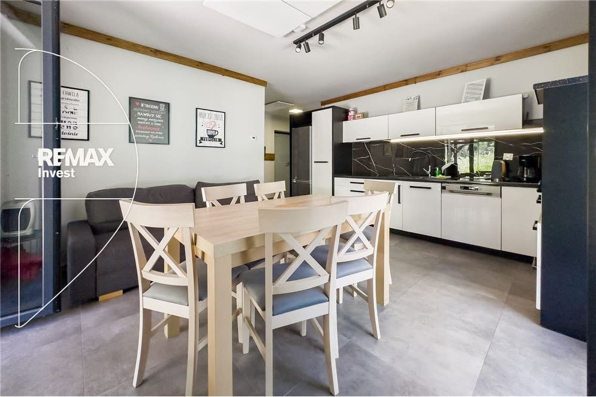

parter · ok. 100 m²Apartament Dolny
Największy apartament w domu - dla dwóch rodzin albo grupy rowerzystów. Trzy sypialnie, salon z kuchnią i cztery tarasy wokół domu.
6-8 osób3 sypialnie4 tarasy
od 690 zł / noc
Zobacz apartament